Timeline
a creative journey
2026
Birthday Girl
That single moment when everyone makes a wish — as if it's actually made of magic.
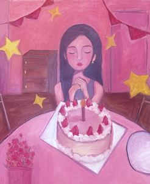
Luggage
I don't see a map. I see my bags. Maps are about goals — but my bags carry what I trust.
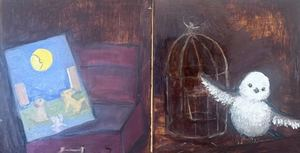
After You
A solo short film exploring the space between human connection and artificial intimacy.
★ 2026 Gollin Film Festival — Critical & Visual Thought Award (Honorable Mention)
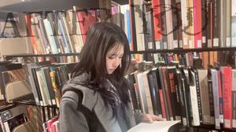
Look Both Ways
Signs demand attention, yet we never look.
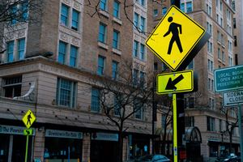
Fissure
Ice beginning to fracture — still solid on the surface, quietly changing from within.
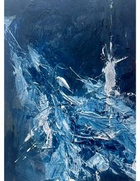
2025
Living Signs of Life
Three small paintings finding life in Rochester's winter stillness.
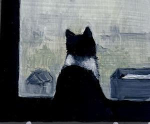
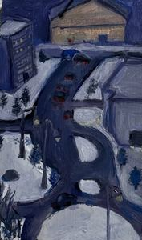
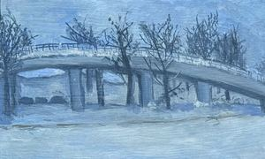
2024
Untitled
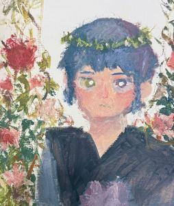
Old Friends
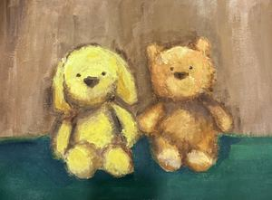
Untitled Collage Series
Strangers, acquaintances, and the familiar — layered through found materials.
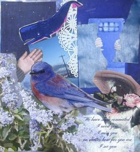
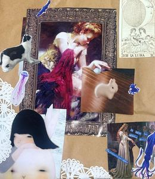
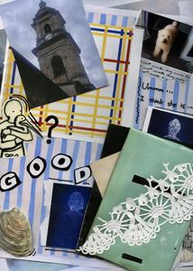
Everything Changed
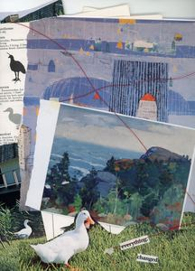
Still There
The beauty in overlooked corners — quiet places that remain.
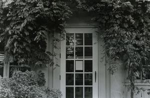
Starry Garden
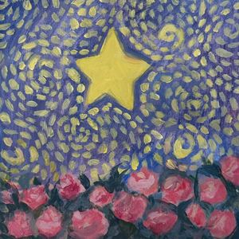
Untitled
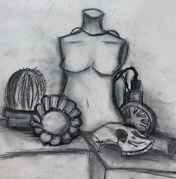
Wire Rabbit
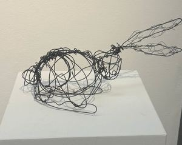
close ×